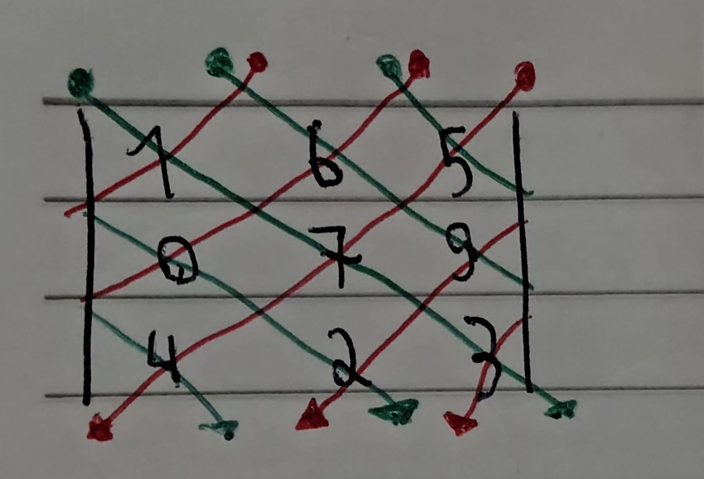

Determinantes
O que são?
Toda matriz quadrada possui um número associado a ela, o nome desse
número é "determinante". Nós não chegamos a estudar os usos deles.
Costuma se representar o determinante da seguinte maneira:
det(nome da mariz): Valor do determinante
Matriz 2x2
Para calcular o determinante de matrizes 2x2 basta multiplicar os números da linha principal e subtrair pela multiplicação dos números da linhas secundária.
Exemplo 1 (a linha principal está em verde e a secundária em vermelho):
| 2 | 3 |
| 1 | 5 |
Calculando:
det(A) = (2*5) - (3*1)
det(A) = 10 - 3
det(A) = 7
Exemplo 2 (a linha principal está em verde e a secundária em vermelho):
| 1 | 7 |
| 3 | 9 |
Calculando:
det(B) = (1*9) - (7*3)
det(B) = 9 - 21
det(B) = -12
Matriz 3x3
Calcular o determinante de matrizes 3x3 é bem mais difícil do
que calcular o determinante de uma matriz 2x2.
Para calcular o determinante de uma matriz 3x3 você deve
somar todas as multiplicações entre todos os elementos em
todas as diferentes linhas verticais descendentes e subtrair
pela multiplicação de todas os elementos de todas as diferentes
linhas verticais acendentes.
Essa operação também é chamada de regra de Sarrus
Para representar em um desenho, ficaria assim:

Exemplo 1:
| 1 | 8 | 5 |
| -3 | 2 | 0 |
| 2 | 4 | 7 |
Cálculo:
det(A) = (1*2*7) + (8*0*2) + (5*-3*4) - (5*2*2) - (1*0*4) - (8*-3*7)
det(A) = (14) + (0) + (-60) - (20) - (0) - (-168)
det(A) = -46 + 148
det(A) = 102
Exemplo 2:
| -3 | 1 | 4 |
| 7 | 5 | 2 |
| 3 | 8 | 6 |
Cálculo:
det(B) = (-3*5*6) + (1*2*3) + (4*7*8) - (4*5*3) - (-3*2*8) - (1*7*6)
det(B) = (-90) + (6) + (224) - (60) - (-48) - (42)
det(B) = 140 - 54
det(B) = 86
Matriz de ordem maior do que 3
É muito difícil fazer o determinante de uma matriz de ordem
maior que 3, por isso foi inventada a regra de Chió, que
é capaz de diminuir por um a ordem da matriz.
Para aplicar a regra de Chió basta separar a primeira linha
e a primeira coluna de uma matriz, e em seguida pegar cada
elemento da matriz que não pertence a primeira fileira e nem
a primeira coluna e diminuir pela multiplicação do primeiro
elemento de sua coluna com o primeiro elemento de sua linha.
OBS: Para aplicar a regra de Chió é necessário que o elemento
da primeira linha e da primeira coluna seja igual a 1;
Exemplo 1:
| 1 | 2 | 4 | 3 |
| 2 | 0 | 1 | 3 |
| 3 | 5 | 6 | 3 |
| 1 | 3 | 2 | 0 |
| 0 - (2*2) | 1 - (4*2) | 3 - (3*2) |
| 5 - (2*3) | 6 - (4*3) | 3 - (3*3) |
| 3 - (2*1) | 2 - (4*1) | 0 - (3*1) |
| 0 - (4) | 1 - (8) | 3 - (6) |
| 5 - (6) | 6 - (12) | 3 - (9) |
| 3 - (2) | 2 - (4) | 0 - (3) |
| -4 | -7 | -3 |
| -1 | -6 | -6 |
| 1 | -2 | -3 |